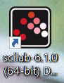

Github倉儲管理 <<
Previous Scilab analysis
在matlab也有相同的功能，則scilab是免費版的，兩者差別在於圖案的華麗度。
進行四連桿分析，可預先到scilab網站下載。
scilab download ：https://www.scilab.org/download/6.1.0

下載完成進入scilab，點選啟動sciNotes可在此記事本打入需要的程式碼。
依據題目可以輸入需要的值及公式進行分析。
例:一四連桿如下圖所示，其中桿件2為曲柄(可旋轉360度)，桿件3為連接桿，若桿件1長度為100mm，桿件2長度為30mm，桿件3長度為80 mm，桿件4長度為60mm，P為桿件3上一點，夾角a=30o，試使用所付之Scilab程式繪製P點軌跡與q3與q4歷程圖。

可將以上已知的數值帶入公式中，在SciNotes上打入程式碼，進行軌跡模擬。
clear
clc
dtr=%pi/180
e1=1;e2=1;
r1=100;r2=30;r3=80;r4=60;r3p=40;
alpha=30*dtr;
theta2=(0:10:360)*dtr;
for i=1:1:length(theta2)
if i==1
theta3p(1)=70*dtr;
theta4p(1)=120*dtr;
else
theta3p(i)=theta3p(i-1);
theta4p(i)=theta4p(i-1);
end
while abs(e1)>0.01*dtr && abs(e2)>0.01*dtr
e1=r2*cos(theta2(i))+r3*cos(theta3p(i))-r4*cos(theta4p(i))-r1
e2=r2*sin(theta2(i))+r3*sin(theta3p(i))-r4*sin(theta4p(i))
delta3=(e1*cos(theta4p(i))+e2*sin(theta4p(i)))/(r3*sin(theta3p(i)-theta4p(i)));
delta4=(e1*cos(theta3p(i))+e2*sin(theta3p(i)))/(r4*sin(theta3p(i)-theta4p(i)));
theta3p(i)=delta3+theta3p(i);
theta4p(i)=delta4+theta4p(i);
end
e1=1;e2=1;
theta3(i)=theta3p(i)/dtr;
theta4(i)=theta4p(i)/dtr;
Xp(i)=r2*cos(theta2(i))+r3p*cos(theta3p(i)+alpha);
Yp(i)=r2*sin(theta2(i))+r3p*sin(theta3p(i)+alpha);
end
clf
subplot(1,2,1)
plot2d(Xp,Yp,5,rect=[-10,5,50,65]);xgrid(1);
xtitle('Yp vs Xp');
xlabel('Xp');
ylabel('Yp');
y=[theta3,theta4];
subplot(2,2,2)
plot(theta2'/dtr,y);xgrid(1);
a=gca();
a.data_bounds=[0,0;400,200];
xtitle('theta3, theta3 vs theta2','theta2')
legend('theta3','theta4')
打完程式碼之後，先儲存sce檔，再到執行頁面中打開剛才存取的檔案
再按下執行。
執行結束後就會得到我們需要的結果了。

分析結果能讓我們知道，機構的運行軌跡，方便去辨識連桿是怎麼運動的。
Github倉儲管理 <<
Previous